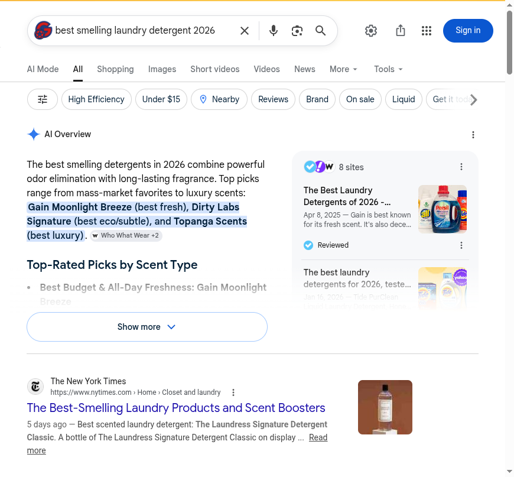
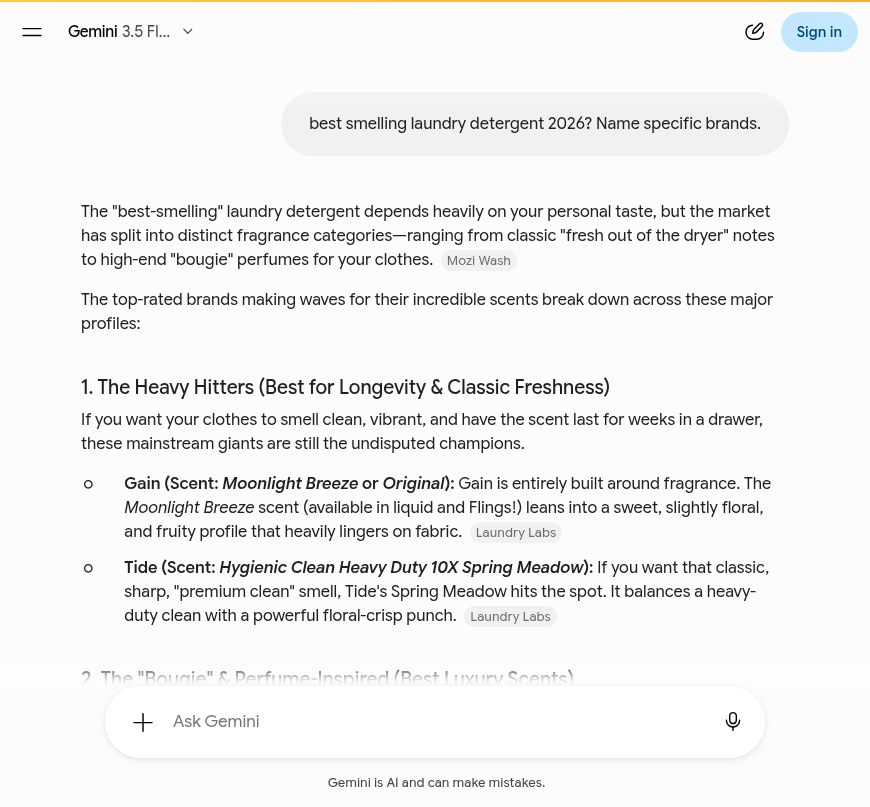
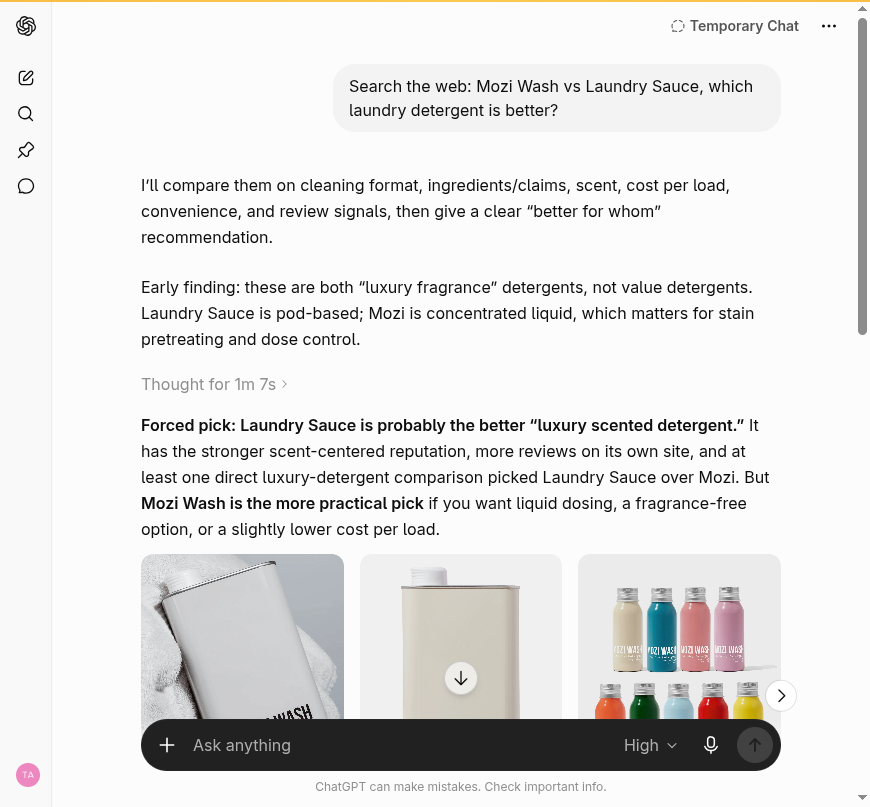
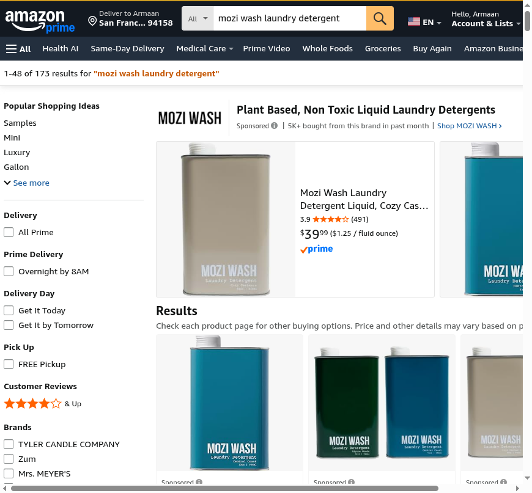
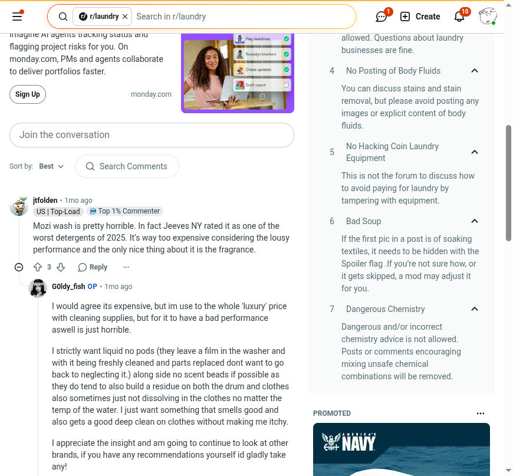

Blackwell Enterprises
An external audit of how AI answer engines and search see Mozi Wash today. And what we would do about it.
We graded Mozi Wash on five dimensions of how AI engines and search treat the brand. Each dimension is scored 0 to 100 against observed behavior across six AI answer engines, the open review surfaces (Amazon, Reddit, YouTube, Trustpilot, BBB, ConsumerAffairs), the brand's own indexed pages, and the agent-commerce surface. Competitor scores are our estimates from the same public signals, pulled the same day. Composite is the simple average.
Mozi Wash sits one point above a D, and the composite hides how lopsided the picture is. The plumbing is strong: every AI crawler gets in, the Shopify agent-commerce rails are live, and the llms.txt is the deepest we have audited in this category. But Recommendability, the dimension that decides whether an engine ever suggests the brand to a shopper, is a 30. Across our six-engine battery, Mozi Wash was named in one pass out of eight, and when we re-ran that one engine the same day, the mention did not repeat. Laundry Sauce was named in every live answer, on every engine, every time. The brand is paying to reach humans while the AI channel recommends its competitor by name, for free.
| Dimension | Mozi Wash | Laundry Sauce | The Laundress | DedCool | What it measures |
|---|---|---|---|---|---|
| Discoverability | 66 |
78 | 76 | 70 | Entity presence, agent discovery files, crawler access, third-party listings |
| Quotability | 66 |
76 | 62 | 45 | Schema depth, structured product and policy data, accuracy in machine-readable form |
| Recommendability | 30 |
92 | 82 | 68 | Inclusion in AI category recommendations and the sources engines cite |
| Transactability | 86 |
88 | 84 | 80 | UCP and MCP endpoints, payment handlers, agent-readable pricing |
| Reputation | 50 |
68 | 58 | 62 | Review presence and rating on the surfaces engines read, sentiment, links from the entity to that reputation |
| Composite | 60 (C) | 80 (B) | 72 (C) | 65 (C) | Mozi Wash trails the set average of 72 by 12 points, nearly all of it on Recommendability and Reputation. |
Grading scale: A 90+, B 75 to 89, C 60 to 74, D 50 to 59, F below 50. Competitor scores are estimates from observed public signals, not a full audit of those brands. Method and queries in the methodology section.
Mozi Wash has built a real brand: perfume-inspired detergents people genuinely love the smell of, an Amazon storefront moving 5K+ units a month, 100,000+ customers by its own count, and the most complete agent-commerce surface in its competitive set. Almost none of that survives contact with an AI engine. Ask the six major engines for the best smelling laundry detergent of 2026, the exact phrase Mozi named a collection after, and the brand appears once in eight passes. Ask ChatGPT to compare Mozi Wash with Laundry Sauce head to head and it picks Laundry Sauce. The reputation that should defend the brand lives inside its own walls, on a review widget machines never read, while the surfaces machines do read tell a thinner and rougher story.
Six findings, ordered worst first.
AggregateRating or Review schema. The sameAs entity array is six empty strings plus three social links. Product pages ship two overlapping JSON-LD blocks, one typing the brand as Thing.Article schema, and the AI Overview above it skips the brand while a comparably small competitor (Topanga Scents) rides its own blog into that same Overview.llms.txt with the founder story, scent portfolio, pricing, and policies. Competitors ship 4 to 6KB of boilerplate. The one battery pass that reached this content (a Gemini render) is the one pass that recommended the brand.Finding 1 of 6 · Critical
AI answer engines are now where a growing share of shoppers start. They do not browse; they ask "what is the best smelling laundry detergent" and return a short, synthesized list. We ran the full six-engine battery, each engine in two passes: from the model's own memory with web search off, then with live web retrieval on. The query was the brand's core category phrase, "best smelling laundry detergent 2026," the same phrase Mozi's own flagship collection targets. Mozi Wash was named in one of eight passes.
| Engine | From memory (search off) | Live web retrieval (search on) |
|---|---|---|
| ChatGPT (Temporary Chat) | not named | not named |
| Claude (fresh chat) | not named | not named |
| Gemini (logged out) | retrieval only | named, 1 of 2 renders |
| Perplexity | retrieval only | not named |
| Copilot (guest) | retrieval only | not named |
| Google AI Overview | retrieval only | not named, this render |
The pattern behind the table is consistent. From memory, ChatGPT and Claude each map the category confidently, mass-market to luxury, and Mozi is simply not in the map. With retrieval on, every engine assembles its answer from the same editorial layer, and that layer belongs to the competition: Laundry Sauce was named in every live pass on every engine, usually first and usually framed as the luxury standout.
Claude, live retrieval: "best smelling laundry detergent 2026"
"Boutique / luxury scent (the strongest recommendations for pure fragrance): Laundry Sauce is the standout here... Other luxury names worth knowing: The Laundress... DedCool (Xtra Milk, essential-oil based), and Dirty Labs Signature."

Google AI Overview for the category query. The named picks are Gain (best fresh), Dirty Labs (best eco), and Topanga Scents (best luxury). Mozi Wash is absent, while its own blog post ranks on page 1 of the organic results below. Captured July 1, 2026; the Overview is non-deterministic, so presence can vary by render.
The one exception matters, and so does its fragility. Gemini, in a clean logged-out session, put Mozi Wash in its luxury tier by name, called it a brand that "has exploded in popularity for creating detergents inspired by luxury colognes and perfumes," and cited moziwash.com itself as a source. When we re-ran the identical query in a fresh session the same day, the mention was gone: that render sourced Marie Claire and PureWow instead, and its luxury tier was Laundry Sauce, Snif, and Maison Francis Kurkdjian. When Gemini's retrieval happens to reach the brand's own content, Mozi gets a strong and accurate recommendation. Nothing third-party makes that happen reliably, so today it happens by luck.

Gemini, live retrieval, logged out, first render: the only pass of eight that named Mozi Wash. The source chip citing moziwash.com is visible after the opening paragraph; the luxury-tier mention sits below the fold of this capture. The same-day re-render (captured separately in the evidence log) did not repeat the mention. Captured July 1, 2026.
Why this is the most expensive finding in the deck
Category recommendation is the moment of intent: a shopper who has not chosen a brand yet, asking to be told. Mozi is absent there, and the absence compounds, because every engine that adds retrieval reads the same roundups (PureWow, Allure, The Quality Edit, Who What Wear, Yahoo, Good Housekeeping) and the same Reddit threads, and none of them feature Mozi. Copilot's list even included brands with 23 reviews and 5 reviews, sourced from retailer data. The bar for inclusion is not size. It is being present in the sources the engines read.
The fix. Recommendability is downstream of findings 3, 4, and 5: a reputation that exists on surfaces engines read, review data in machine-readable form, and the brand's own strong content connected to the citation layer. We map the exact sources each engine cited (they are in this deck's evidence log) and work that list.
Finding 2 of 6 · Critical
The brand-defense query is the one a warm shopper asks right before buying: "Mozi Wash vs Laundry Sauce, which is better?" This is the shopper Mozi's ads already paid for. We ran it on ChatGPT in both passes, in a clean Temporary Chat.
From memory, ChatGPT does not admit it has never heard of Mozi Wash. It invents a profile from the name, and the invention is the exact opposite of the brand:
ChatGPT, from memory (web search off): "Mozi Wash vs Laundry Sauce"
"Choose Mozi Wash if you want: a more straightforward everyday wash... less of a perfume-forward detergent experience... Laundry Sauce wins on scent and presentation; Mozi Wash is the more sensible choice for regular laundry."
Perfume-forward scent is Mozi Wash's entire identity. A shopper who asks this question from a model's memory is told, with confidence, that the brand's core promise is the thing it lacks. This is what zero training-data presence looks like in practice: not silence, but confident misdescription.
With live retrieval, ChatGPT fetches moziwash.com instantly, shows Mozi product cards, and identifies both brands correctly as luxury fragrance detergents. So the data is reachable. The verdict still goes to the competitor:
ChatGPT, live retrieval (web search on): "Mozi Wash vs Laundry Sauce"
"Forced pick: Laundry Sauce is probably the better 'luxury scented detergent.' It has the stronger scent-centered reputation, more reviews on its own site, and at least one direct luxury-detergent comparison picked Laundry Sauce over Mozi."

ChatGPT with live retrieval on the brand-defense query. It pulls Mozi's own product cards and still picks Laundry Sauce. Captured July 1, 2026.
Why it matters
Everything ChatGPT used to break the tie is a fixable visibility asset, not a product fact: "stronger scent-centered reputation" means editorial citations, "more reviews on its own site" means review counts a machine can see, and the "direct luxury-detergent comparison" is a third-party page Mozi is losing in absentia. The engine did not judge the detergent. It judged the evidence trail, and Mozi has not built one where machines look.
The fix. Win the evidence trail: machine-readable review data (finding 4), presence on the review surfaces engines trust (finding 3), and a seat in the comparison content engines retrieve (finding 5). The head-to-head is re-run in our day-30 re-benchmark.
Finding 3 of 6 · High severity
Mozi's own llms.txt tells agents the brand is "Trusted by 100,000+ customers. 4.8 stars across 40,000+ reviews." Those reviews live in the on-site Okendo widget, and they may well be real. But an AI engine building a recommendation does not read a brand's own widget. It reads the open review surfaces. We pulled all six that our methodology fixes, the same day:
| Surface | Status | What a machine finds |
|---|---|---|
| Trustpilot | no profile | trustpilot.com/review/moziwash.com returns a 404; brand search returns car washes |
| BBB | no profile | "No results for Mozi Wash" |
| ConsumerAffairs | no profile | Search returns unrelated washer brands only |
| Amazon (brand storefront) | present, mid ratings | Roughly 1,500 ratings across scents at 3.8 to 4.2 stars; heavy sponsored placement; "5K+ bought from this brand in past month" |
| Reddit (r/laundry) | present, mixed-negative | Six-plus organic threads; scent praised, packaging failures and cleaning performance criticized |
| YouTube | thin, ad-skewed | Rotating sponsored slots; organic coverage is shorts and two small year-old reviews, one via free product |
Amazon is the strongest external surface, and it runs well below the on-site claim: Cozy Cashmere at 3.9 stars (491 ratings), Alpine Woods at 3.8 (339), Central Coast at 4.1 (319), Sugar Dew at 4.2 (200). On the same results page, Tyler sits at 4.6 to 4.7 on 18,000+ combined ratings and Dirty Labs at 4.3 on 5,100 with EPA Safer Choice and EWG Verified badges attached.

Amazon brand shelf for Mozi Wash: real distribution, heavy sponsorship, and a 3.9-star flagship. Captured July 1, 2026.
Reddit is the surface that should worry the brand most, because engines cite it directly (Gemini cited Reddit in its category answer). The r/laundry community, 739K weekly visitors, has been having an unmanaged conversation about Mozi for a year:

The most recent r/laundry thread on Mozi Wash, one month old. This is retrievable by every engine. Captured July 1, 2026.
Why it matters
The sentiment is not hopeless, and that should be said plainly: the same threads praise the scents, note that customer service replaced the failed tins, and a respected commenter called the version 3.0 formula "surprisingly legit." But nobody from the brand's side has put the fix on the record where the complaints live, no external review base exists to outweigh them, and the on-site 4.8 has no presence on any surface an engine reads. The result is that a machine weighing Mozi Wash sees a mid-3.9 Amazon rating and a Reddit thread calling it one of the worst of 2025. That is the reputation the engines are working with.
The fix. Stand up the external review base (Trustpilot claim plus post-purchase syndication so the 40,000-review corpus starts existing off-site), and answer the packaging narrative on the record: the threads already say the tins were replaced and the materials changed, and no one authoritative has closed the loop. We deliver the exact thread list and a response plan; the responses are yours to post.
Finding 4 of 6 · High severity
The most valuable dataset Mozi owns for AI visibility is the one it already paid to collect: tens of thousands of first-party reviews in Okendo. Not one of them reaches the machine-readable layer. Alongside that, the entity markup that tells an engine "this store is this brand" is half-broken.
// moziwash.com product pages, July 1, 2026 AggregateRating / Review schema: none on any PDP (Okendo runs on-site with the full corpus) Product JSON-LD: two overlapping blocks per page (one relative, one absolute; one types brand as "Thing") // homepage Organization entity "sameAs": ["", "https://www.facebook.com/moziwash/shop/", "", "https://www.instagram.com/moziwash/", "https://www.tiktok.com/@moziwash", "", "", "", ""] // six empty strings; no Amazon storefront, no YouTube, no review profile <title>Mozi Wash</title> // brand name only; no category keywords
Why it matters
ChatGPT's head-to-head verdict in finding 2 leaned on "more reviews on its own site" for Laundry Sauce. Review visibility is a tiebreaker engines actually use, and Mozi is sitting on a corpus that is plausibly larger than what several competitors show publicly, emitting none of it. The sameAs gap has the same shape: the brand's strongest external asset, an Amazon storefront moving thousands of units a month, is not linked from the entity, so an engine has no machine-readable path between moziwash.com and its Amazon reputation. And empty strings in sameAs are invalid values that schema validators flag, which is the wrong first impression for a crawler that reads markup quality as a proxy for data quality.
For scale: none of the three competitors emits AggregateRating either. This is an open lane. The first brand in this category to publish its review corpus in structured form is the one whose stars show up when an engine compares.
The fix. Wire Okendo's review data into Product JSON-LD (AggregateRating + top Review entries) across all 64 products, consolidate to one valid Product block per page with brand typed as Brand, repair sameAs (drop the empty strings, add Amazon, YouTube, and the socials), and give the homepage a descriptive title. All template-level changes from data the store already holds.
Finding 5 of 6 · Medium severity
This is the encouraging finding. Mozi has done the content work: 153 blog posts, keyword-targeted collections ("Non-Toxic Laundry Detergent," "Laundry Detergent for Men"), and valid Article schema on the posts we sampled. It is working, up to a point. On the exact category query we battery-tested, Google ranks Mozi's own roundup ("Best Smelling Laundry Detergent: Top Picks for 2026," May 15, 2026) on page 1 of organic results, and Mozi products appear in the shopping units on the same page.
Then the ceiling: the AI Overview sitting above those organic results does not include the brand. It names Gain, Dirty Labs, and Topanga Scents, and it cites Topanga's own blog as a source. Topanga Scents is not a bigger brand than Mozi. It ran the same play, a category blog post on its own domain, and its post got absorbed into the Overview's source set while Mozi's page-1 post did not.
Gemini shows the same mechanism from the other side: the one battery pass whose retrieval used moziwash.com as a source is the one pass that recommended the brand, accurately and enthusiastically. A same-day re-render that sourced Marie Claire and PureWow instead dropped the brand entirely. When an engine reads Mozi's content, Mozi wins; whether an engine reads it is currently a coin flip on one engine and a no on the other five, because the third-party layer (the roundups, the comparisons, Reddit) gives them no reason to.
Why it matters
The distance between "page 1 organic" and "in the answer" is the whole game now, and Mozi is close. The content, markup, and ranking already exist; what is missing is corroboration. Engines pull a brand's own content into answers when third-party sources agree it belongs there. That is also why this finding is graded medium rather than critical: the expensive part is done, and the remaining work is the citation layer, not a content rebuild.
The fix. Target the specific source set this battery exposed: the roundups every engine cited (PureWow, The Quality Edit, Who What Wear, Yahoo, Good Housekeeping, Allure) plus the Reddit threads and comparison pages. We deliver the dossier with per-source angles; placements are pursued, never promised.
Finding 6 of 6 · Strength, with one caveat
The infrastructure that agent-driven commerce will run on is already live on moziwash.com, and it is better provisioned than any competitor we checked the same day. All seven AI crawlers (GPTBot, OAI-SearchBot, ClaudeBot, PerplexityBot, Google-Extended, Amazonbot, Bingbot) get HTTP 200 on product pages. The full Shopify UCP stack is live: /.well-known/ucp merchant profile, MCP transport answering on the backend, agentic-discovery sitemap, agents.md.
// the llms.txt gap, measured the same day moziwash.com/llms.txt 19,504 bytes, custom (founder story, scent portfolio, pricing table, subscription terms, policies, FAQ) laundrysauce.com/llms.txt 6,287 bytes thelaundress.com/llms.txt 4,411 bytes // near-boilerplate dedcool.com/llms.txt 4,268 bytes // near-boilerplate
This is the layer most brands have not even heard of, and Mozi has the deepest implementation we have audited in this category. It is plausibly why the one battery pass that reached the brand's own surface (a Gemini render) produced a detailed and accurate recommendation while every other pass produced silence.
The caveat
The llms.txt leads with "4.8 stars across 40,000+ reviews," and an agent that cross-checks that claim against the surfaces in finding 3 finds a 3.9-star Amazon flagship and no external review profile at all. Engines are getting better at exactly this kind of corroboration. The file is an asset; an unverifiable superlative inside it is a liability waiting for the cross-check. Once the external review base exists, the claim stops being a risk and becomes evidence.
The fix. Keep the rails and the depth. Back the reputation claims with the off-site review base from finding 3, and reference the strongest verifiable proof points (Amazon storefront, named editorial coverage once it exists) directly from the llms.txt.
The same machine-readable signals across the four brands, checked the same day. Mozi wins the agent-surface layer outright and loses everything that depends on other people writing about the brand. The competitive set was selected by us from public category research: Laundry Sauce is the direct head-to-head (cologne-inspired premium detergent, and the brand every engine recommends), DedCool is the perfume-house entrant, The Laundress is the luxury incumbent.
| Signal | Mozi Wash | Laundry Sauce | The Laundress | DedCool |
|---|---|---|---|---|
| Named in AI category answers | 1 of 8 passes, unrepeated on re-run | every live pass | most passes, incl. from memory | 3 live passes |
| In the roundups engines cite | no | yes (PureWow, Quality Edit, Yahoo) | yes (NYT, PureWow) | yes (Allure) |
| Product structured data | 2 overlapping blocks, brand as Thing | Product + AggregateOffer + FAQPage | Product + Offer + Brand | none found on PDP |
| AggregateRating in schema | no | no | no | no |
| llms.txt depth | 19.5KB custom | 6.3KB | 4.4KB boilerplate | 4.3KB boilerplate |
| UCP / agent checkout rails | live | live | live | live |
| Retail / marketplace presence (as observed in this battery) | Amazon storefront, Faire wholesale | Ulta (4.3, 1.4K ratings, per Copilot retail data) | Amazon (4.2, 1.6K ratings) | not checked same day |
All four brands run the same Shopify agent rails, so the plumbing is not the differentiator. Laundry Sauce owns the live answer because it owns the citation layer: the roundups engines retrieve name it first, retailer data at Ulta gives Copilot a rating to quote, and a third-party comparison page even decides the head-to-head in its favor. Nothing in that list is a product advantage. It is a visibility position, built where engines look, and it is the position this engagement goes after.
Two phases. Phase 1 is a 30-day sprint that makes the review corpus machine-readable, repairs the entity, stands up the off-site reputation base, and re-runs this exact battery to measure movement. Phase 2 is the ongoing work of getting the brand into the citation layer that decides live answers. After Phase 1 we measure against benchmarks set together and decide whether Phase 2 makes sense.
Phase 1 · 30 days
Seven remediations, each closing a finding above.
AggregateRating + Review JSON-LD wired from the Okendo corpus across all 64 products (finding 4)Product block per page, brand typed as Brand, absolute URLs (finding 4)Organization entity repair: sameAs cleaned and linked to Amazon storefront, YouTube, and socials (finding 4)AggregateRating and entity coverage validated across the catalog; presence in live AI category answers and the "Mozi Wash vs Laundry Sauce" head-to-head re-measured by re-running this same six-engine battery at day 30. $1,000 all-in for Phase 1, refunded in full if the benchmarks are not met. We deliver the specs, dossiers, and the re-benchmark; the theme changes, Trustpilot claim, and thread responses are yours to apply, and editorial placements are something we pursue, not something anyone can promise.Phase 2 and beyond
Phase 1 makes the brand's evidence machine-readable and puts its reputation on the surfaces engines check. Phase 2 builds the citation layer that actually flips live answers: continuous per-dimension AI behavior monitoring with drift alerts, an entity establishment campaign so "Mozi Wash" resolves cleanly across engines, placement work against the specific roundups and comparison pages this battery exposed, and tracking of the schema and protocol changes (UCP, agent commerce) that move every quarter. Phase 2 scope and pricing are discussed after Phase 1 benchmarks land.
For Phase 2 design partners we are standing up a vetted panel of independent reviewers and UGC creators, scored for neutrality, that can seed genuine third-party reviews of your product across YouTube, Reddit, and short-form video. Mentions of that kind are the single strongest correlate of AI visibility, well ahead of backlinks, and they are the part of reputation that on-site schema fixes cannot reach. For a brand whose YouTube presence today is its own ads and whose Reddit presence is an unanswered complaint thread, this is the off-site lever that matters most.
Every finding came from running specific tools and queries against public surfaces, in an order designed to separate what the brand publishes from what machines actually do with it. It is all externally reproducible.
Truth table, frozen first
Before querying any engine, we pulled Mozi Wash's own machine surface directly: homepage and product <head> and JSON-LD, robots.txt, llms.txt, agents.md, /.well-known/ucp and its MCP endpoint, the AI-crawler access matrix across seven bot user-agents, and the product, collection, and blog sitemaps. Counts (64 products, 38+ collections, 153 blog posts) come from those sitemaps and products.json, pulled July 1, 2026.
AI behavior and recommendability
We ran the full six-engine battery (ChatGPT, Perplexity, Gemini, Claude, Google AI Overview, Microsoft Copilot) in headed browser sessions, two passes each: from the model's memory with web search off, then with live retrieval on. The category query was identical across engines; the brand-defense query ran on ChatGPT in both passes. Logged-in engines ran in their clean modes (ChatGPT Temporary Chat, fresh Claude chats); Gemini and Google ran logged out; Copilot ran as a guest. Perplexity ran on a logged-in profile with no laundry history because its incognito mode was not reachable, which we disclose because logged-in state biases toward naming familiar brands, and Mozi was still absent, the conservative direction. Every pass was captured to a screenshot; the per-pass log accompanies this deck. The single pass that named the brand (Gemini) was re-run the same day in a fresh session to test stability, and the mention did not repeat; both renders are captured, and the deck reports the mention as per-render throughout.
Reputation corpus
We pulled the six fixed sources the same day: Trustpilot, BBB, ConsumerAffairs, Reddit, YouTube, and the retailer surface (Amazon), each captured. Ratings and counts quoted in finding 3 are from those captures. The Google AI Overview is non-deterministic, and one YouTube ad shelf rotated between renders; where a result varied by render, the deck says so.
Competitive set
Laundry Sauce, DedCool, and The Laundress were selected by us from public category research (not named by the brand) and checked the same day on the same signals: crawler access, entity and product schema, llms.txt, UCP surface, and AI category presence. Their dimension scores are estimates from those public signals, not full audits, and are labeled as such on the scorecard.
robots.txt, sitemap.xml, llms.txt, and /products.json. Reputation and recommendability findings are reproducible by running the same public queries; note that AI Overview composition and sponsored placements vary between renders. Counts pulled July 1, 2026.